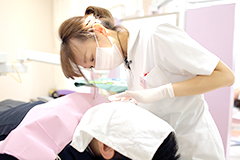

079-562-8471
079-562-8471- Home
- 医院概要・アクセス・診療の流れ・新患・急患の方へ
北野坂鳥居歯科医院に初めてご来院の方へAbout
兵庫県神戸市三宮の歯医者「北野坂 鳥居歯科医院」に初めてご来院の皆様へ、安心して診療を受けていただけるように、医院概要やアクセス、診療の流れをご案内します。JR三ノ宮駅と阪急三宮駅からの分かりやすい行き方もご案内していますので参考になさってください。
| 医院概要 | アクセス | 診療の流れ | 新患・急患の方へ | プライバシーポリシー |
|---|
医院概要
| 医院名 | 医療法人社団 悠和会 北野坂鳥居歯科医院 |
|---|---|
| 診療時間 | 平日 9：00～13：00/14：30～20：00 土曜 9：00～13：00/14：30～18：00 |
| 休診日 | 日曜・祝日・祭日 |
| 所在地 | 〒650-0004 兵庫県神戸市中央区中山手通1丁目8-17 ダイヤモンドビル3F |
| TEL | 078-321-0146 |
アクセス
JR三ノ宮駅からお越しの方へ
1. 中央改札口を出て阪急三宮方面に向かい、横断歩道を渡っていただきます。
2. 横断歩道からさらに進んでいただくと左手にモニュメントが見えてきます。

3. モニュメントを抜けるとドコモショップさんとジャンボカラオケ広場さんが見えてきますので、その間の道（北野坂）を北に進んでください。
4. しばらく道なりに進んでいただくと左手にパン屋さんが見えてきます。

5. その隣のビルの3階です。階段を上っていただき、エレベーターをご利用ください。
阪急三宮駅からお越しの方
1. 東改札口を出て、左に進んでいただきます。
2. 出口が見えますので、出口を出て右に進んでください。
3. マツモトキヨシさんが見えますので、北に進みます。
4. ドコモショップさんとジャンボカラオケ広場さんが見えてきますので、その間の道（北野坂）を北に進んでください。

5. しばらく道なりに進んでいただくと左手にパン屋さんが見えてきます。
6. パン屋さんのとなりのビルの3階です。階段を上っていただき、エレベーターをご利用ください。
新患・急患の方へ
お口まわりのお悩みは何でしょうか？ 痛みや疑問、不安はありませんか？

患者様のお悩みをしっかり受けとめられるように、当院では、まず、電子問診票(iPad)にて詳しく問診いたします。さらにドクターからの問診、視診を経て、歯科衛生士から検査内容や口腔内衛生状態をご説明いたします。そのあとで、レントゲン検査を行い、1本1本の歯の検査、口腔内細菌を位相差顕微鏡で確認し、痛みや不具合にアプローチします。
出血や痛みなど急を要する症状がある場合には、そちらの応急処置をいたしますのでご安心ください。
診療の流れ
受付
受付の際には保険証をお持ちください。
当院では診察券スマホアプリを導入しています。何かお口のトラブルが発生した場合、お電話をいただければ当院のパソコンに患者様の情報が瞬時に表示されますので、口腔内の把握ができ、スムーズなご案内ができます。
その他、以下のような機能がご利用可能です
- スマホを電子診察券として利用できます
- 次回予約の確認ができます
- 来院のご案内や処置後のご注意を通知できます
- お薬手帳としても利用できます
※スマホをお持ちでない方はQRコードが付与された診察券をお渡しします。
下記からダウンロードできます
▶App Store（iPhoneの方）
▶Google Play（Androidの方）
問診
当院では電子カルテを採用しております。iPadを用いて問診を行います。指一本でのかんたん操作が可能です。
治療
- STEP1 カウンセリング
-
プライバシーに配慮したスペースでカウンセリングを行います。リラックスできる環境で、患者様のお悩みや治療に対するさまざまなご要望をお伺いします。そして治療のことや検査の必要性、予防の重要性のお話もいたします。
- STEP2 応急処置
-
「痛みがある」「出血している」「歯が欠けた」「前歯の差し歯が外れた」など緊急性の高い症状がある場合には応急処置を行います。
- STEP3 精密検査
-
患者様に合う治療を行うためには精密検査のデータをもとにした精密診断が欠かせません。お口の状態に合わせてレントゲン検査、歯周病検査、噛み合わせ検査、お顔やお口の中の写真撮影などを行います。顕微鏡でのお口の中の細菌検査の際には、患者様にもご確認いただきます。そして治療の重要性をお伝えします。
- STEP4 治療計画のご提案
-
精密検査で得たデータをもとに診断し、結果をもとに患者様へ治療計画をご提案します。治療の選択肢についてそれぞれのメリット・デメリットをお話し、今後の流れや治療期間・費用などをご説明します。分からない点は遠慮なくおたずねください。丁寧にご説明します。
- STEP5 治療開始
-
患者様にご理解・ご納得していただいた治療計画に沿って治療を開始します。治療の途中経過によっては治療内容を変更することもありますが、その際には改めてご説明し患者様のご同意を得てから進めていきます。
- STEP6 メンテナンス
-

治療が終了しましたら、健やかな状態を維持していただくためのご自宅でのセルフケアのアドバイスをいたします。また歯科医院には定期検診で通っていただき、PMTC（歯のクリーニング）などを受けることをおすすめします。患者様のお口の状態に合わせて予防プログラムを作成して、長い目で見てお口の健康をサポートいたします。
ご予約
診察券スマホアプリ（スマイルパスポート）を導入しています。
スマイルパスポートをご利用の患者様は、ご予約の際にご利用の旨をお気軽にお申しつけください。診療日やお知らせなどを当院よりお知らせいたします。
※スマートフォンをお持ちでない患者様には、QRコードが付与された診察券をお渡しします。
※ご予約の変更に関しては、お電話でお願いします。
診察券スマホアプリ（スマイルパスポート）は、下記からダウンロードできます
▶App Store（iPhoneの方）
▶Google Play（Androidの方）
お会計
当院では自動精算機を導入し、スムーズな会計を可能にしました。患者様の待ち時間の短縮にもつながります。忙しい患者様でも通いやすい環境を整えております。
プライバシーポリシー
個人情報保護方針
医療法人社団 悠和会 北野坂鳥居歯科医院（以下、「当院」）では、患者様の個人情報の重要性をふまえ、以下の方針にもとづき個人情報を適切に取り扱うために取り組み、適用される法令およびその他の規範を遵守いたします。
個人情報の利用目的
当院にご提供いただく個人情報（お名前、ご住所、お電話番号、電子メールなど）は、次の目的でのみ利用いたします。
1．院内での利用
- 患者様にご提供する医療サービス
- 医療・介護保険事務
- 患者様に係る管理運営業務のうち
○ 会計・経理
○ 質向上・安全確保・医療事故あるいは未然防止などの分析・報告
○ 患者様への医療・サービスの向上 - 院内医療実習への協力
- 医療の質の向上を目的とした院内での症例研究
- その他、患者様に係る管理運営業務
2．その他事業者等への情報提供
- 当院から情報提供のうち
○ 他の病院、診療所、薬局などとの連携
○ 他の医療機関等からの照会への回答
○ 身体検査業務の委託・その他の業務委託
○ 患者様の診療等にあたり、外部の医師・歯科医師等の意見・助言を求める場合
○ ご家族への病状説明 - 医療・介護保険事務のうち
○ 保険事務の委託
○ 審査支払機関または、保険者へのレセプトの提出
○ 審査支払機関または、保険者からの照会への回答 - 事業者等からの委託を受けて健康診断等を行った場合における、事業者等への結果の通知
- 医師賠償責任保険等に係る、医療に関する専門の団体、保険会社等への相談または届出など
- その他、患者様への医療保険事務に関する利用
3．学会・医療誌等への発表
特定の患者様等の症例や事例の、学会・研究会・学術雑誌等における報告は、氏名、生年月日、住所等を消去し匿名化します。匿名化が困難な場合は、本人の同意を得ます。
個人情報の提供
当院では、患者様からご提供いただく個人情報は、患者様ご本人の同意なく、第三者に開示することはありません。ただし、法令等により個人情報の開示が要求された場合、当該官公署にかぎり開示いたします。
セキュリティー
患者様からご提供いただく個人情報は、当院所定の管理基準にもとづき厳重に管理し、紛失、破壊、改ざん、漏洩等の防止策を講じます。
プライバシーポリシーの変更について
当院は、個人情報を適切に管理するため、法令・規範のもと、つねに院内の管理体制を見直し、継続的な改善に取り組んでいます。プライバシーポリシーに重要な変更がある場合には、サイト上で告知いたします。
お問い合わせについて
当院の個人情報の取り扱いに関するご質問、または、開示、訂正などの請求に関する手続きや費用につきましては、下記までお問い合わせください。
医療法人社団 悠和会 北野坂鳥居歯科医院
〒650-0004
兵庫県神戸市中央区中山手通1丁目8-17 ダイヤモンドビル3F
TEL. 078-321-0146
 WEB予約
WEB予約